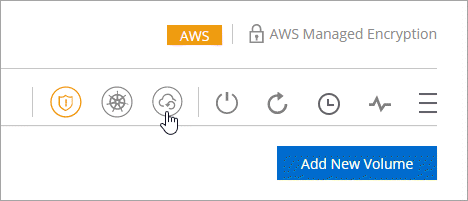
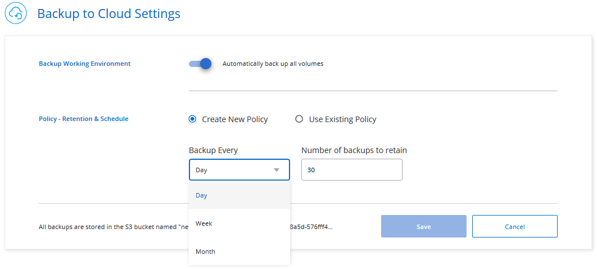
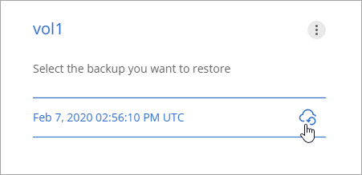
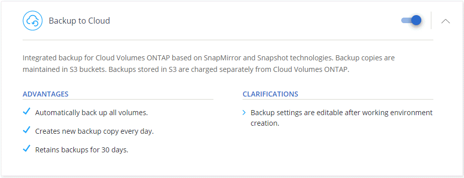

Amazon S3へのデータのバックアップ
Cloud Volumes ONTAPからAmazon S3へのデータのバックアップを開始するには、いくつかの手順を実行します。
クイックスタート
以下の手順に従ってすばやく開始するか、下にスクロールして詳細を確認してください。
 構成のサポートを確認する
構成のサポートを確認する
AWSでCloud Volumes ONTAP 9.6以降を実行している。
新しいCloud Manager Marketplaceオファリングに登録しました。
Cloud Managerに権限を提供するIAMロールには、最新のCloud ManagerポリシーからのS3権限が含まれます。
新規または既存のシステムでクラウドへのバックアップを有効にする
新しいシステム：クラウドへのバックアップは、作業環境ウィザードでデフォルトで有効になっています。オプションを有効にしておいてください。
既存のシステム：作業環境を開き、バックアップ設定アイコンをクリックして、バックアップを有効にします。

 必要に応じて、バックアップポリシーを変更します。
必要に応じて、バックアップポリシーを変更します。
デフォルトのポリシーでは、毎日ボリュームがバックアップされ、各ボリュームの最新の30個のバックアップコピーが保持されます。毎週または毎月のバックアップに変更するか、より多くのオプションを提供するシステム定義のポリシーの1つを選択します。保持するバックアップコピーの数を変更することもできます。

 必要に応じてデータを復元します
必要に応じてデータを復元します
Cloud Managerの上部で、[ バックアップ ]をクリックし、ボリュームを選択してバックアップを選択し、バックアップから新しいボリュームにデータを復元します。

必要条件
ボリュームのS3へのバックアップを開始する前に、以下の要件を読んで、サポートされている構成であることを確認してください。
- サポートされるONTAPバージョン
Cloud Volumes ONTAP 9.6以降。
- サポートされるAWSリージョン
クラウドへのバックアップは、Cloud Volumes ONTAPがサポートされているすべてのAWSリージョンでサポートされています。
- AWSサブスクリプション要件
3.7.3リリース以降、新しいCloud ManagerサブスクリプションがAWS Marketplaceで利用可能になりました。このサブスクリプションにより、Cloud Volumes ONTAP 9.6以降（PAYGO）の導入とBackup to Cloudが可能になります。 Backup to Cloudを有効にする前に、この新しいCloud Managerサブスクリプションをサブスクライブする必要があります。クラウドへのバックアップの請求は、このサブスクリプションを通じて行われます。
- AWSの権限が必要です
Cloud Managerに権限を提供するIAMロールには、最新のCloud Managerポリシーの S3権限が含まれている必要があります。
ポリシーからの特定の権限は次のとおりです。
{ "Sid": "backupPolicy", "Effect": "Allow", "Action": [ "s3:DeleteBucket", "s3:GetLifecycleConfiguration", "s3:PutLifecycleConfiguration", "s3:PutBucketTagging", "s3:ListBucketVersions", "s3:GetObject", "s3:ListBucket", "s3:ListAllMyBuckets", "s3:GetBucketTagging", "s3:GetBucketLocation", "s3:GetBucketPolicyStatus", "s3:GetBucketPublicAccessBlock", "s3:GetBucketAcl", "s3:GetBucketPolicy", "s3:PutBucketPublicAccessBlock" ], "Resource": [ "arn:aws:s3:::netapp-backup-*" ] },
新しいシステムでクラウドへのバックアップを有効にする
クラウドへのバックアップは、作業環境ウィザードでデフォルトで有効になっています。オプションを有効にしておいてください。
[ Create Cloud Volumes ONTAP]をクリックします 。
クラウドプロバイダーとしてAmazon Web Servicesを選択してから、単一ノードまたはHAシステムを選択します。
詳細と認証情報ページに入力します。
[サービス]ページで、サービスを有効のままにして、[ 続行 ]をクリックします。

ウィザードのページに入力して、システムを展開します。
クラウドへのバックアップはシステムで有効になっており、毎日ボリュームをバックアップし、最新の30個のバックアップコピーを保持します。
既存のシステムでクラウドへのバックアップを有効にする
作業環境からいつでも直接クラウドへのバックアップを有効にします。
作業環境を開きます。
バックアップ設定アイコンをクリックします。
[ すべてのボリュームを自動的にバックアップする]を選択します 。
バックアップスケジュールと保持値を選択し、[ 保存 ]をクリックします 。
クラウドへのバックアップにより、各ボリュームの初期バックアップが開始されます。
 GitHubで編集
GitHubで編集